Abstract
Visual Question Answering (VQA) models often perform poorly on out-of-distribution data and struggle on domain generalization. Due to the multi-modal nature of this task, multiple factors of variation are intertwined, making generalization difficult to analyze. This motivates us to introduce a virtual benchmark, Super-CLEVR, where different factors in VQA domain shifts can be isolated in order that their effects can be studied independently. Four factors are considered: visual complexity, question redundancy, concept distribution and concept compositionality. With controllably generated data, Super-CLEVR enables us to test VQA methods in situations where the test data differs from the training data along each of these axes. We study four existing methods, including two neural symbolic methods NSCL and NSVQA, and two non-symbolic methods FiLM and mDETR; and our proposed method, probabilistic NSVQA (P-NSVQA), which extends NSVQA with uncertainty reasoning. P-NSVQA outperforms other methods on three of the four domain shift factors. Our results suggest that disentangling reasoning and perception, combined with probabilistic uncertainty, form a strong VQA model that is more robust to domain shifts.
Dataset
Super-CLEVR contains 30k images of vehicles (from UDA-Part) randomly placed in the scenes, with 10 question-answer pairs for each image. The vehicles have part annotations and so the objects in the images can have distinct part attributes.
The first 20k images and paired are used for training, the next 5k for validation and the last 5k for testing.
| Data | Download Link |
|---|---|
| images | images.zip |
| scenes | superCLEVR_scenes.json |
| questions | superCLEVR_questions_30k.json |
| questions (- redundancy) | superCLEVR_questions_30k_NoRedundant.json |
| questions (+ redundancy) | superCLEVR_questions_30k_AllRedundant.json |
Citation
Objects and Parts
| 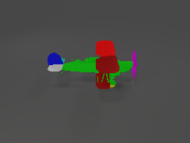 | 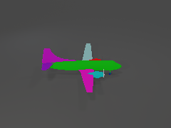 | 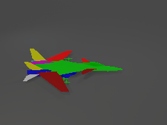 | |
| (No-1) airliner left door, front wheel, fin, right engine, propeller, back left wheel, left engine, back right wheel, left tailplane, right door, right tailplane, right wing, left wing |
(No-2) biplane front wheel, fin, propeller, left tailplane, right tailplane, right wing, left wing |
(No-3) jet left door, front wheel, fin, right engine, propeller, back left wheel, left engine, back right wheel, left tailplane, right tailplane, right wing, left wing |
(No-4) fighter fin, right engine, left engine, left tailplane, right tailplane, right wing, left wing |
| 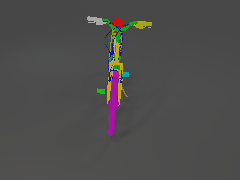 | 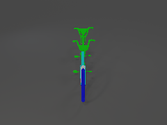 | 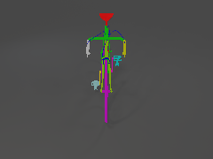 | 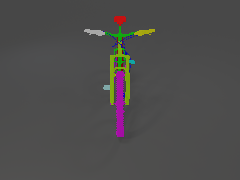 |
| (No-5) utility bike left handle, brake system, front wheel, left pedal, right handle, back wheel, saddle, carrier, fork, right crank arm, front fender, drive chain, back fender, left crank arm, side stand, right pedal |
(No-6) tandem bike rearlight, front wheel, back wheel, fork, front fender, back fender |
(No-7) road bike left handle, brake system, front wheel, left pedal, right handle, back wheel, saddle, fork, right crank arm, drive chain, left crank arm, right pedal |
(No-8) mountain bike left handle, brake system, front wheel, left pedal, right handle, back wheel, saddle, fork, right crank arm, drive chain, left crank arm, right pedal |
| 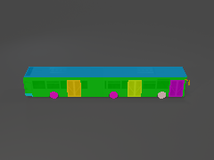 | 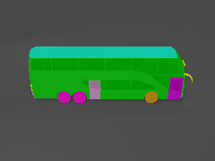 | 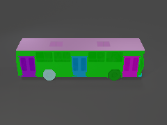 | 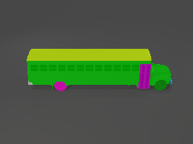 |
| (No-9) articulated bus left tail light, front license plate, front right door, back bumper, right head light, front left wheel, left mirror, right tail light, back right door, back left wheel, back right wheel, back license plate, front right wheel, left head light, right mirror, trunk, mid right door, roof |
(No-10) double bus left tail light, front license plate, front right door, front bumper, back bumper, right head light, front left wheel, left mirror, right tail light, back left wheel, back right wheel, back license plate, mid left door, front left door, front right wheel, left head light, right mirror, trunk, mid right door, roof |
(No-11) regular bus left tail light, front license plate, front right door, front bumper, back bumper, right head light, front left wheel, left mirror, right tail light, back right door, back left wheel, back right wheel, back license plate, front right wheel, left head light, right mirror, trunk, mid right door, roof |
(No-12) school bus left tail light, front license plate, front right door, front bumper, back bumper, right head light, front left wheel, left mirror, right tail light, back left wheel, back right wheel, back license plate, mid left door, front right wheel, left head light, right mirror, roof |
| 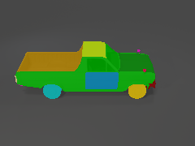 | 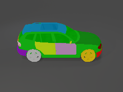 | 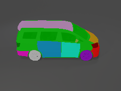 | 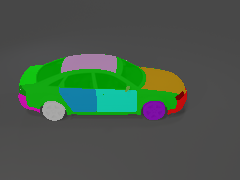 |
| (No-13) truck front left door, left tail light, left head light, back right wheel, right head light, front bumper, right mirror, front license plate, front right wheel, back bumper, left mirror, back left wheel, right tail light, hood, trunk, front left wheel, roof, front right door |
(No-14) suv front left door, left tail light, left head light, back left door, back right wheel, right head light, front bumper, right mirror, front right wheel, back bumper, left mirror, back left wheel, right tail light, hood, trunk, front left wheel, back right door, roof, front right door |
(No-15) minivan front left door, left tail light, left head light, back left door, back right wheel, right head light, front bumper, right mirror, front license plate, front right wheel, back bumper, left mirror, back left wheel, right tail light, hood, trunk, front left wheel, back right door, roof, front right door, back license plate |
(No-16) sedan front left door, left tail light, left head light, back left door, back right wheel, right head light, front bumper, right mirror, front license plate, front right wheel, back bumper, left mirror, back left wheel, right tail light, hood, trunk, front left wheel, back right door, roof, front right door, back license plate |
| 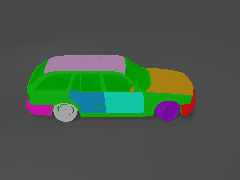 | 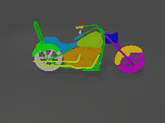 | 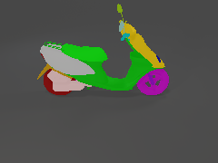 | 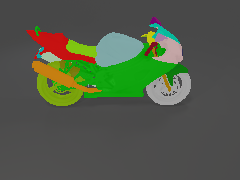 |
| (No-17) wagon front left door, left tail light, left head light, back left door, back right wheel, right head light, front bumper, right mirror, front license plate, front right wheel, back bumper, left mirror, back left wheel, right tail light, hood, trunk, front left wheel, back right door, roof, front right door, back license plate |
(No-18) chopper left handle, center headlight, front wheel, right handle, back wheel, center taillight, left mirror, gas tank, front fender, fork, drive chain, left footrest, right mirror, windscreen, engine, back fender, right exhaust, seat, panel, right footrest |
(No-19) scooter left handle, center headlight, front wheel, right handle, back cover, back wheel, center taillight, left mirror, front cover, fork, drive chain, right mirror, engine, left exhaust, back fender, seat, panel |
(No-20) cruiser left handle, center headlight, right headlight, right taillight, front wheel, right handle, back cover, back wheel, left taillight, left mirror, left headlight, gas tank, front cover, front fender, fork, drive chain, left footrest, license plate, right mirror, windscreen, left exhaust, back fender, right exhaust, seat, panel, right footrest |
| 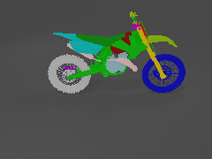 | |||
| (No-21) dirtbike left handle, front wheel, right handle, back cover, back wheel, gas tank, front cover, front fender, fork, drive chain, left footrest, engine, right exhaust, seat, panel, right footrest |